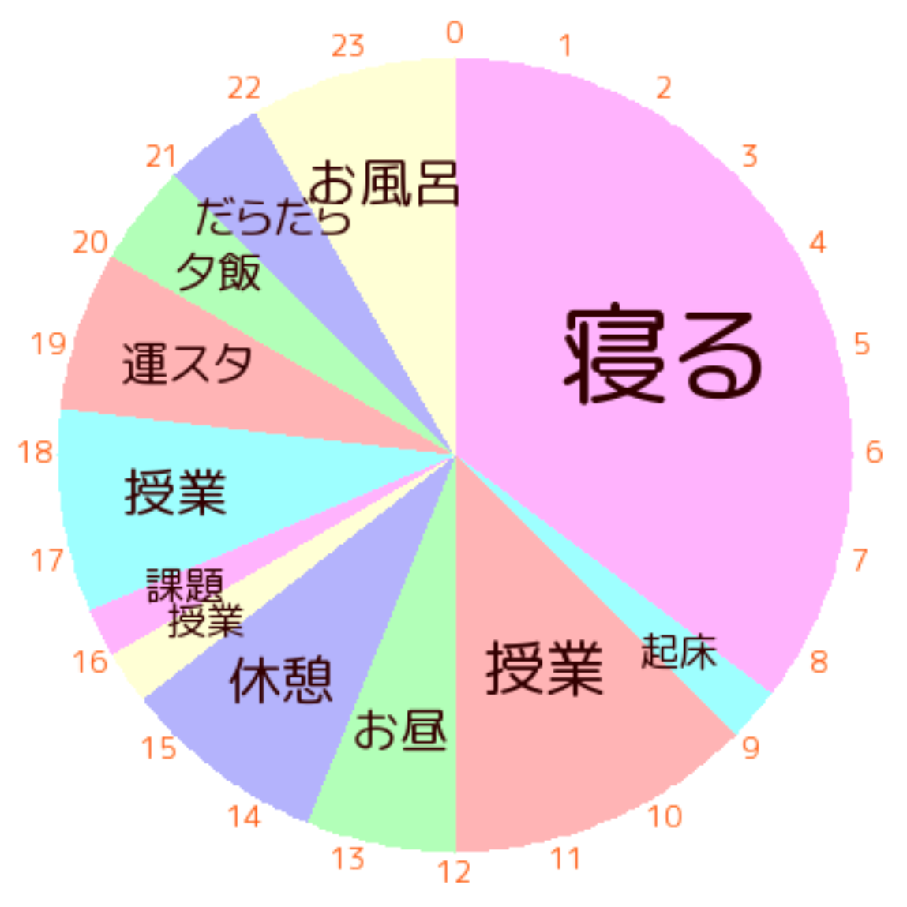
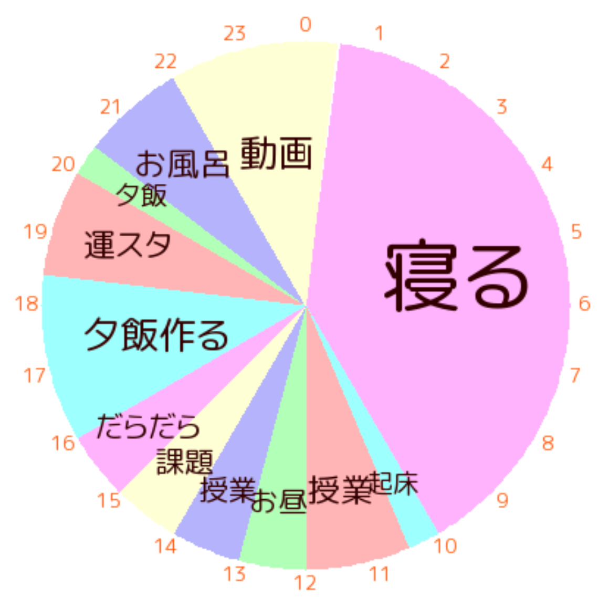
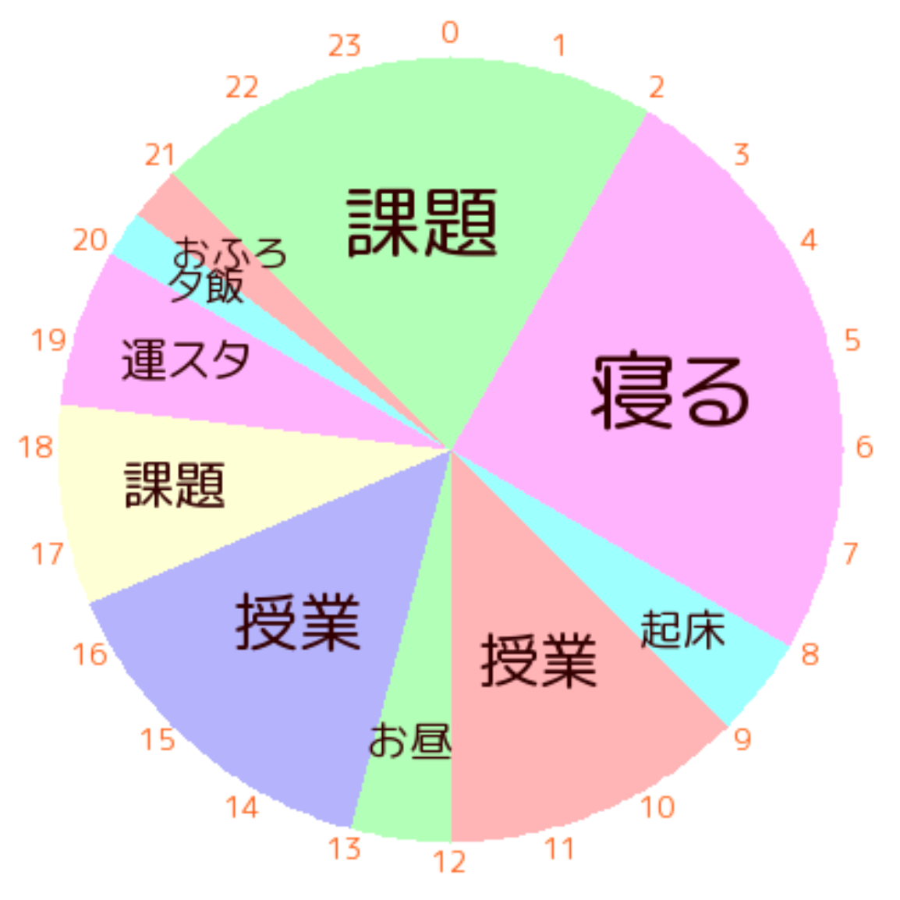
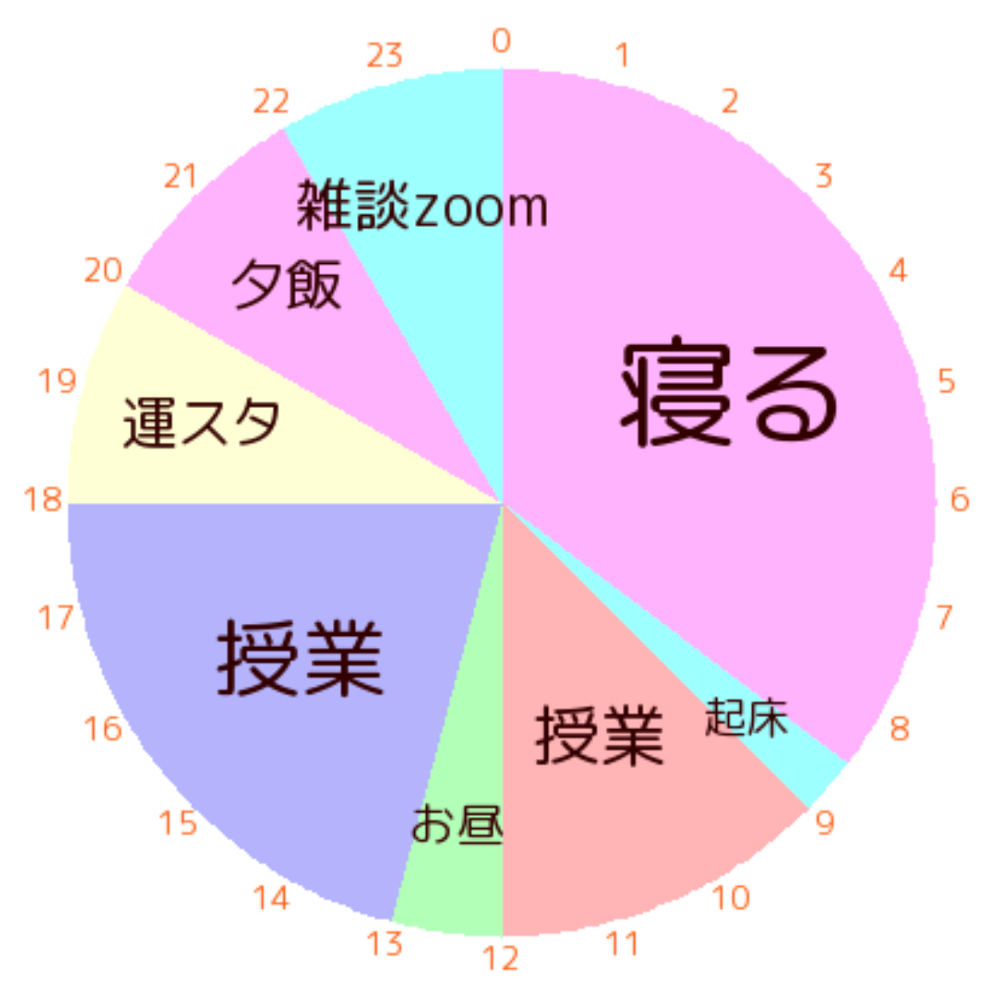
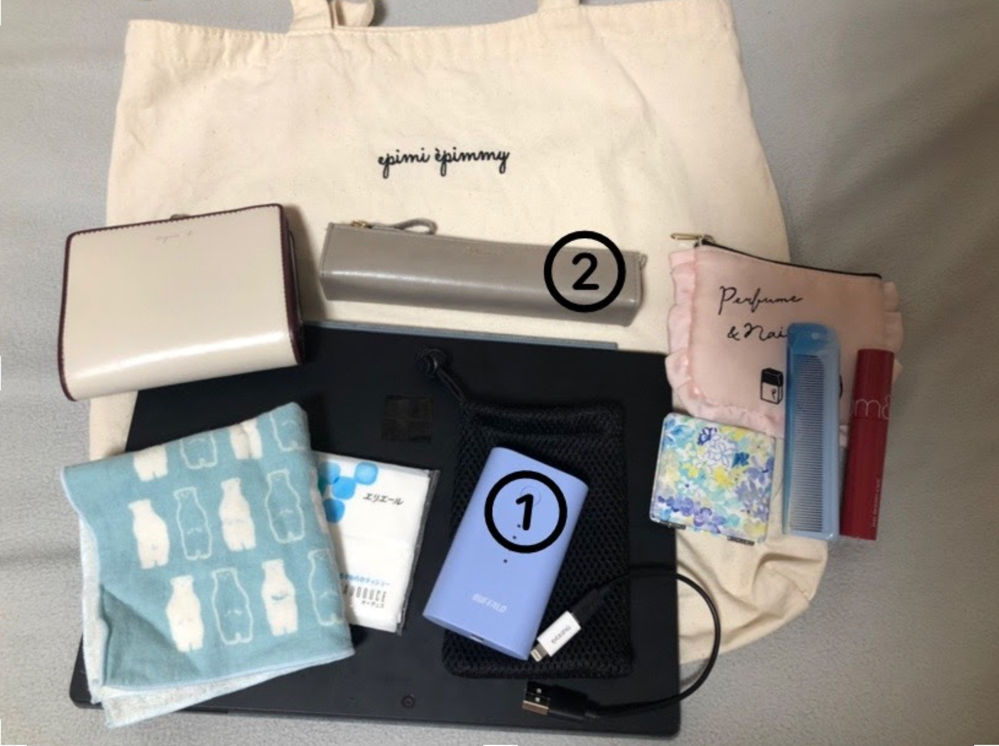
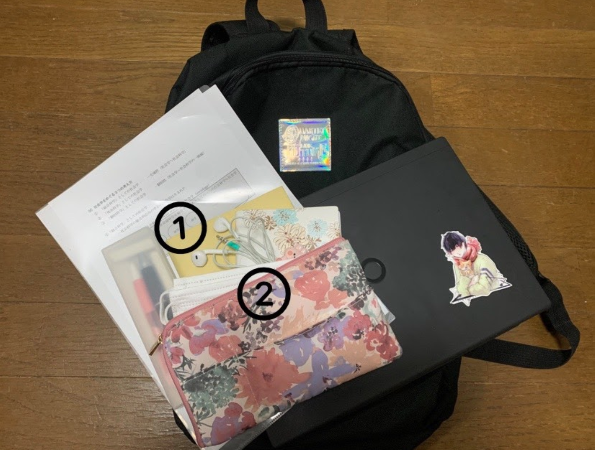
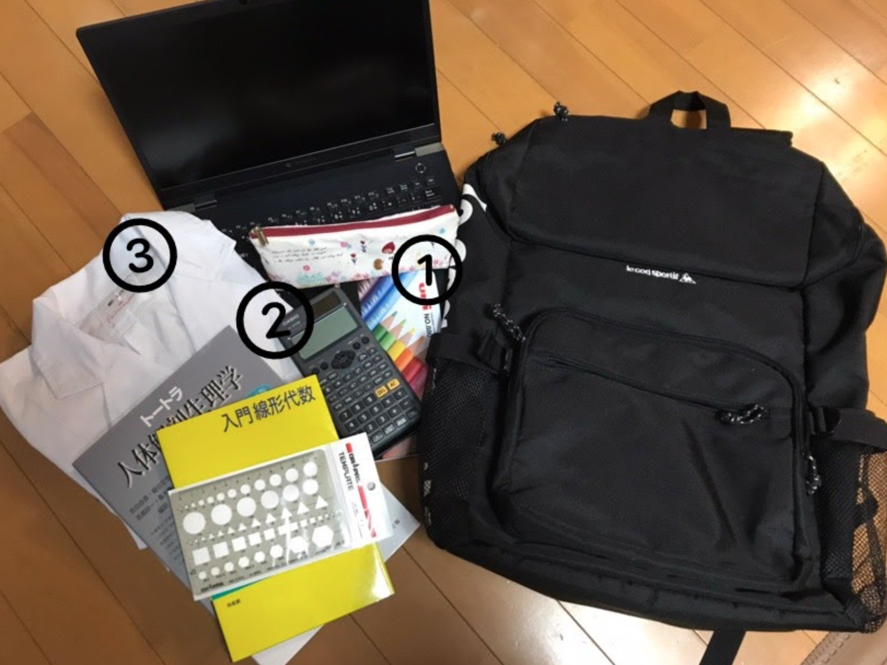
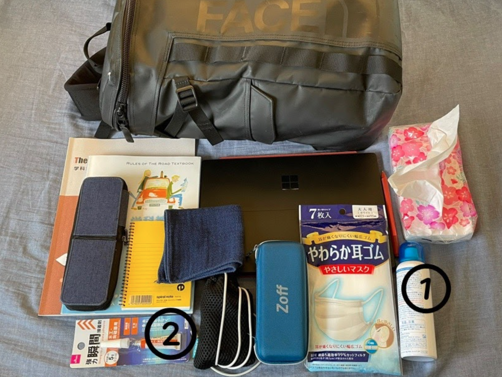

運スタの日常を覗いてみよう！
目次
1.1日のスケジュール～文系～ 2.1日のスケジュール～理系～ 3.アルバイトについて 4.かばんの中身
新入生のみなさん、ご入学おめでとうございます！
大学生活がどのようなものか、まだ想像がつかない方も多いかもしれません。
そんなみなさんに向けて、今回は早稲田祭2021運営スタッフに所属している4人
（文化構想学部のAさん、社会科学部のBさん、先進理工学部のCさん、創造理工学部のDさん）
に協力していただき、1日のスケジュール・アルバイト、かばんの中身（普段の持ち物について）をお聞きしました。
実際に先輩たちがどのような日常を過ごしているのか、一緒に覗いてみましょう！
1.1日のスケジュール～文系～
・Aさん（文化構想学部）
空きコマを利用して、課題・オンデマンド授業を受けておくのがサークル活動と勉強を上手く両立するコツですね。
・Bさん（社会科学部）
動画のサブスクリプションに入会し、快適な自粛期間を送っています。
1日中授業があった高校時代と比べて、授業数がぐっと減る文系大学生。AさんとBさんは食後にゆっくりする時間を取っています。文系の大学生は暇、という噂は本当なのかも…...？）
2.1日のスケジュール～理系～
・Cさん（先進理工学部）
運スタがない日はアルバイトをしているCさん。
アルバイト・運スタ・授業の三拍子揃って忙しいご様子です。
特筆すべきは深夜までの課題！ 受験を思い出しますね(笑) 文系大学生も見習おう！
・Dさん（創造理工学部）
雑談Zoomは人と気軽に会えない今ならでは！
理系の学部も対面授業は少なかったようですが、キャンパスで友達と課題をやったりZoomの授業に一緒に出たりしたのは楽しかったそうです！
3.アルバイトについて
Aさんは飲食のホールスタッフと個別指導の塾講師、Bさんは正月の巫女さんと単発でイベント受付を行っています。
また、Cさんは週1で塾講師、課題に余裕のある週は土日に単発の試験監督やイベントスタッフなど、
Dさんは受験生時代に通っていた塾の講師を行っています。
単発のアルバイトは自分の都合に合わせて働くことができるので、スケジュールが読みにくい大学生向きだと言えます。
様々なアルバイトがありますが、早大生には塾講師が人気のようです。
時給も高く、早稲田生だと採用されやすいので、アルバイトに何をするか悩んでいる新入生のみなさんは塾講師や家庭教師の求人を探してみてはいかがでしょうか。
アルバイトを掛け持ちしている人もとても多いので、興味を持ったアルバイトがあればぜひ挑戦してみてください！
4.かばんの中身
・Aさん
①モバイルバッテリー
スマホの充電はすぐになくなるので必須です。
大学にはコンセントがありとあらゆるところにあるので持っていない人は友達に借りるかコードを持参しましょう！
②筆箱
基本はパソコンで授業を受けますが、レジュメが配られる時があるので筆箱も一応持っていきましょう。
・Bさん
①単語帳
TOEIC対策をしています。ただ開く回数は少ないそうです(笑)
②マスク
汚したときのための予備。このご時世では特に大事ですね。
・Cさん
①色鉛筆
どうして色鉛筆を持ち歩くのか、疑問に思った方もいるでしょう！ 実験の記録や細胞を顕微鏡で見てスケッチするときに使うそうです。
②CASIOの関数電卓
pHの計算や三角関数、logの計算に使う電卓です。
③白衣
実験で服や体を守るために着ます。夏は暑いらしいです。
・Dさん
①アレルスクリーン（花粉症用スプレー）
ボックスティッシュを持ち歩いていることからも察することができるように、重度の花粉症に悩まされています。このスプレーは効くらしいので花粉症の人はぜひ。
②瞬間接着剤
「何かあったときのため」に持ち歩いているそう。一体彼には何があるのでしょうか‥
大学への持ち物リストには、文系の2人からは、イヤホン、財布、スケジュール帳、単語帳、定期、ティッシュ、パソコン、筆記用具、マスク、モバイルバッテリー、ハンカチ、リップがあがりました。
理系の2人からは、色鉛筆、関数電卓、教科書、筆記用具、白衣、マスク、パソコンがあがりました。
文系理系問わずやはり大学生にパソコンは欠かせないようですね！
課題や講義、サークルなど様々な場面で使用するので、重さやスペックなど性能を比較して、自分に合ったお気に入りの1台を持ち歩きましょう！
関数電卓や白衣などは理系ならではの持ち物ですね。
いかがだったでしょうか。みなさんが実際に運スタに入会したときの生活は想像できましたか？
早稲田祭運営スタッフは、早稲田大学3大サークルの一角と言われています。
規模が大きく所属人数が多いので、運スタで友達をたくさん作って早稲田祭2021を一緒に盛り上げましょう～！
運スタをもっと知りたいという人はここをクリック！
交流企画もぜひご利用ください！